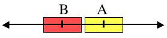
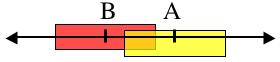
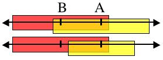

Introduction:
The Merriam-Webster Online Dictionary, defines epidemiology as "a branch of medical science that deals with the incidence, distribution, and control of disease in a population." For obvious reasons, studies of the spread of a disease in human populations must be based upon data collected during prior outbreaks. Unfortunately, this data may be of limited use in predicting the effects that different containment methods such as quarantine or vaccination will have on future outbreaks. Further, historical data may be of limited use in predicting how new, yet unseen, diseases might spread and how they might be contained. To help with these types of questions, epidemiologists have developed mathematical and computer models of disease spreading. Using these models, scientists can unleash virtual diseases into virtual populations. Thus these scientists are able to study how diseases spread and the effectiveness of different containment methods, without jeopardizing human life. In this lab you will be experimenting with several Java objects that implement one such epidemiological model, the SEIR Model. This model and the associated Java objects that you will be using are discussed in the following sections.
The SEIR Model of Disease Spreading:
The SEIR (Susceptible-Exposed-Infected-Recovered) model is used to model infectious diseases such as measles, mumps, chicken pox and rubella. In this model each individual in a population is classified into one of four categories:
In the SEIR model, everyone begins in the Susceptible state. A single Exposed person is then introduced to the population. Over time, the exposed person becomes Infectious and begins spreading the disease to susceptible people. Some of those susceptible people in turn become exposed and then infectious, thus spreading the disease even further. Eventually, the infectious people become Recovered and can no longer contract or spread the disease. This process is illustrated graphically in Figure 1.
Figure 1: Graphical depiction of the SEIR model.
Getting Started:
There are several more details about the SEIR model that will become important to us as we continue. However, before getting into those details you will begin to familiarize yourself with a Java implementation of the SEIR model.
Exercise 0: Create a Lab03 folder inside your CS131 folder in your Home Directory. Download the Epidemiology Simulator BlueJ Project to your Lab03 directory. This file may automatically unpack itself to create an EpidemiologySimulator folder. If this does not happen, double click on the EpidemiologySimulator.zip icon to unpack it. Finally, open BlueJ and use it to open the EpidemiologySimulator project. Once you have opened the simulator you should see a window like the one shown in figure 1. Note that there is nothing to turn in for this exercise.
Figure 2: The EpidemiologySimulator Project in BlueJ.
The Classes:
The BlueJ project you have opened contains eight classes that define the objects used by the simulation. For the purposes of this lab, we will only be concerned with the three classes in the top row, Disease, Population and DiseaseSimulator. The other five classes are used by these three to create objects used in the simulation and also to display the graphical user interface. The rest of this section will guide you through an exploration of each of three classes in the top row.
The Disease Class:
As its name suggests, the Disease class models a disease. Each object of type Disease can model of a different disease depending upon the values of its attributes.
Exercise 1: Create a new Disease object using the Disease() constructor. Give this Disease instance the name EX1. List the steps that you used to create this object.
Exercise 2: What attributes does a Disease object have? (Hint: Use BlueJ's object inspector.) What are the values of the attributes in the Disease object that you created?
The attributes of a Disease object describe how that disease will behave when it is released into a population. The role of several of these attributes was hinted at earlier when the categories of the SEIR model were discussed.
infectivity: The infectivity of a Disease indicates the probability that an individual will become exposed following contact with an infectious individual. For example, if the infectivity is 10, then there is a 10% chance that a susceptible individual will become exposed each time he comes into contact with an infectious individual.
incubationPeriod: The incubation period of a Disease indicates the length of time before symptoms appear in a person that has been exposed to the disease. For example, a person exposed to chicken pox may not show any symptoms of the disease for up to 21 days.
latencyPeriod: The latency period of a Disease indicates the length of time between when a person is exposed to the disease and when he becomes infectious. For example, with chicken pox, the latency period is typically 1 to 2 days shorter than the incubation period. Thus, a person that has been exposed to chicken pox will become infectious before he begins to show any symptoms.
infectiousPeriod: The infectious period of a Disease indicates the length of time that a person with the disease will remain infectious. For example, the infectious period for chicken pox is between 5 and 7 days, starting 1 to 2 days before symptoms appear and continuing for 4 to 5 days while the lesions break out and crust over.
Figure 3, shown below, gives a graphical representation of the SEIR model of a disease. The blue boxes show how the latencyPeriod, the incubationPeriod and the infectiousPeriod relate to the SEIR model. Note that in the figure shown, the incubation period is longer than the latency period. Thus, in the disease shown a person will become infectious before he begins to show symptoms. In another disease, it may be the case that the incubation period would be shorter than the latency period and symptoms would appear before a person becomes infectious.
Figure 3: The relationship of the latency, incubation
and infectious periods to the states of the SEIR model.
Exercise 3: Create a new Disease object to model a disease with the following characteristics. Twenty percent of individuals who come into contact with an infectious person should contract the disease. Once contracting the disease a person should begin to show symptoms 5 days after exposure, become infectious 2 days after exposure and remain infectious for 3 days. Give this Disease the name EX3. Describe the steps that you used to create this object.
Hint: Do not modify the source code to complete this exercise or the next one.
Exercise 4: Create a new Disease object to model a disease with the following characteristics. Twenty-three percent of individuals who come into contact with an infectious person should contract the disease. A person exposed to this disease should be infectious for 2 days, starting 3 days after exposure. Symptoms for this disease appear 2 days after exposure. Give this Disease the name EX4. Do not describe every step that you used to create this object, but instead just list the values you used as parameters to the constructor.
The Population Class:
The Population class models a population of people and how they interact with each other. In this model, people are arranged into rows and columns forming a 2-dimensional grid, like a checker board but with many more squares. When a simulation is carried out, every person will interact with each of their 8 closest neighbors during each day of the simulation. Figure 4 shows the neighbors with whom an individual will interact. Individuals along the edges of the grid have fewer than 8 neighbors. To compensate for having fewer neighbors, these individuals interact with a corresponding individual on the opposite edge of the grid. Imagine rolling the grid into a tube. An individual on the edge will interact with the individual that he contacts on the opposing edge. Also imagine connecting the top and bottom of the tube, the result looks like a doughnut (technically a torus). In a torus all individuals will have exactly 8 neighbors.
Figure 4: Every person in the population
will interact with their 8 closest neighbors
during each day of the simulation.
There are several other features of Population objects that will be useful as you continue through this lab. The next few exercises will highlight a few of these features. Other features will be introduced later as they are needed.
Exercise 5: When using a simulation to study a natural phenomenon, such as disease spreading, it is important to understand the strengths and weaknesses of the model that is being used. What are the strengths and weaknesses of our population as a model of how people interact in the real world? In other words, what aspects of the simulation are similar to the real world and what aspects are different from the real world? Describe at least one strength of the model and at least one weakness of the model.
Exercise 6: Create a new Population object using the Population() constructor. How many people are in a population? How did you determine this?
Exercise 7: What value is returned by a call to the getPercentSusceptible() method? Explain why that exact value makes sense. What value do you think will be returned from the getPercentExposed() method? Why? Hint: Recall that a simulation using the SEIR model begins by introducing a single exposed individual into a population of susceptible individuals.
The DiseaseSimulator Class:
The DiseaseSimulator class controls the interaction between a particular Disease and a particular Population.
Exercise 8: Create a new DiseaseSimulator object using the disease EX1 and the Population that you created in Exercise 6. Notice that the constructor for the DiseaseSimulator class requires a Disease object, a Population object and a String as parameters. To enter the Disease and Population parameters you can type their names in the provided fields. Alternatively, you can highlight the field and click the mouse on the object that you would like to use as a parameter. Doing this will cause BlueJ to fill in the name of the object for you. The String parameter provides a name for the DiseaseSimulator. It is used as a label to distinguish results from different experiments. You may use any name you like for your disease simulator. Note: There is nothing to turn in for this exercise.
The DiseaseSimulator has a method that, when called, will display a graphical user interface (GUI) that provides a visualization of the population. This method is called showGUI(). Invoke the showGUI() method on your DiseaseSimulator object from Exercise 8. When you do this, a window like the one shown in Figure 5 will appear (Note: It may appear behind other windows, so you may have to move some windows around in order to find it.) Each square in the window represents an individual in the population. The color of each square indicates the state of that individual using the color key shown at the bottom of the GUI. The Population shown in Figure 5 has a single exposed individual and the rest of the population is susceptible.
Figure 5: GUI providing a visualization of the population.
Calling the step() method in the DiseaseSimulator class simulates a single day in the life of the Population.
Exercise 9: Call the step() method once. What happens? How many times do you have to call step() before something happens? Why? What happens the next two times you call step()? Why? (Hint: Think about the Disease that is spreading in the Population.)
You could advance the Population through as many days as you want by repeatedly calling the step() method. However, that would be extremely tedious. This process is automated for you by the step(int days) method. This method takes an int as a parameter to specify the number of days by which to advance the Population.
Exercise 10: Use the step(int days) method to run the simulation for 20 more days. Now call the getPercentInfectious() and the getPercentExposed() methods on the Population. What values did these functions return? Explain these results in terms of what you see in the GUI. Be sure to use specific numbers in your explanation.
Exercise 11: Reset the Population that you used in Exercise 10 to its initial condition by calling the reset() method on it. Now run the simulation for 50 days. What percentage of the Population is affected by the Disease after 50 days? Note: You should consider anyone in the exposed, infected or recovered states to have been affected by the disease.
Exercise 12: If you repeat this simulation several times do you get exactly the same result each time? Explain why not.
Because you get a different result each time you run the simulation, if you want to know what percentage of the population will be affected by the disease on average you will need to run many trials. The DiseaseSimulator class provides two methods that are useful for running multiple trials and collecting the associated data. The runTrials(int days, int trials) method will run trials simulations, each lasting for days days. The results of each trial can be displayed in tabular form by calling the showDataTable() method. The data table also contains the mean and standard deviation for each column of results.
Exercise 13: Using the same DiseaseSimulator, run 25 trials of 50 days each. Note that the trials run much much faster if you hide the GUI (Use the hideGUI() method in the DiseaseSimulator class). You will also probably want to show the data table so that you can watch the progress as the results of each trial are posted. Report the mean and standard deviation for the percentage of people that have been affected by the disease. Note: The column labeled "EIQR" contains the total number of people in the exposed, infected, quarantined and recovered states.
An Experiment:
Now that you are familiar with the operation of the Disease, Population and DiseaseSimulator classes, it is time to do some comparative epidemiology. In doing so, you will make hypotheses about which diseases affect more of the population within 50 days. You will also collect the data necessary to test your hypotheses.
Exercise 14: In Exercise 13 you collected data about the percentage of a population that would be affected by the disease EX1 within 50 days. Do you think that the disease EX3 will affect a larger or smaller percentage of the population than disease EX1 within 50 days? What about disease EX4, will it affect a larger or smaller percentage of the population than disease EX1? Briefly justify your answers.
Exercise 15: In order to test the hypotheses that you made in Exercise 14, you will need to repeat the experiment that you performed for disease EX1 in Exercise 13 for the diseases EX3 and EX4. Repeating these experiments will require that you create new Population objects and also new DiseaseSimulator objects using the diseases EX3 and EX4. Report the mean and standard deviation for the percentage of people affected by each of the diseases.
Testing Your Hypotheses
When testing hypotheses about mean values, it is rarely sufficient to consider only the mean values. It is important to also consider the distribution of the experimental results used to calculate the mean values. Recall that the standard deviation of a set of results is related to the distribution of the results. In particular, it is expected that most of the results from the set (specifically 68% of them) lie within one standard deviation of the mean value. Or thinking about it another way, if the experiment were run another 100 times, we should expect that about 68 of the 100 results obtained to be within one standard deviation of the mean value.
With the above notion of standard deviation in mind, the following example should illustrate why considering mean values alone is not sufficient when testing hypotheses. Imagine two experiments, like those that you just did, but using two other diseases, call them 'A' and 'B'. Also, imagine that our hypothesis for this experiment is that within 50 days disease A will affect a larger percentage of the population than disease B.
Table 1 shows some hypothetical experimental results for comparing diseases A and B. These results can also be illustrated graphically as shown in Figure 6. The yellow box indicates the range where we would expect to find most (68%) of the results for disease A. The red box indicates the range in which we would expect to find most of the results for disease B. In this case, most of the results for disease A are different from most of the results for disease B. Thus, we can be quite certain that disease A will affect a larger percentage of the population than will disease B. Under these circumstances, we would conclude that the data supports our hypothesis.
| Disease | Mean | Std. Dev. |
|---|---|---|
| A | 58% | 3% |
| B | 49% | 5% |
Figure 6: A graphical representation of the results in Table 1.
To see that it is important to consider not only the mean but also the distribution of the data, consider the results of experiments comparing diseases C and D shown in Table 2. The mean values for these diseases are identical to those for A and B, however the distribution of the results and thus the standard deviations are different. Graphically these results look like those shown in Figure 7. Unlike with diseases A and B, many of the results from disease C look similar to those from disease D and vice versa. In fact the mean value for disease C falls into the same range as most of the results for disease D, and vice versa. Thus, we can not be very certain that disease C will affect a larger percentage of the population than will disease D. So in this case, if our hypothesis had been that disease C would affect a larger percentage of the population than disease D, then under these circumstances we would have to conclude that the data does not support our hypothesis.
| Disease | Mean | Std. Dev. |
|---|---|---|
| C | 58% | 15% |
| D | 49% | 20% |
Figure 7: A graphical representation of the results in Table 2.
When testing hypotheses in this course we will consider three cases. Each of these cases is described and illustrated in Table 3.
| Description | Illustration | Conclusion |
|---|---|---|
| The range of values within one standard deviation of the mean of each experiment do not overlap at all with those of the other experiment. |  | This data strongly supports the hypothesis that A is larger than B. |
| The range of values within one standard deviation of the mean of each experiment overlap but neither contain the mean value of the other experiment. |  | This data weakly supports the hypothesis that A is larger than B. |
| The range of values within one standard deviation of the mean of at least one experiment contains the mean of the other experiment. |  | This data does not support the hypothesis that A is larger than B. |
Exercise 16: Consider the experimental results shown in the table below:
| Disease | Mean | Std. Dev. |
|---|---|---|
| X | 50% | 3% |
| Y | 35% | 10% |
| Z | 40% | 8% |
Indicate if the data in the table strongly supports, weakly supports or does not support each of the following hypotheses. Show your work.
Exercise 17: Does the data that you collected in Exercises 13 and 15 strongly support, weakly support or not support the hypotheses you made in Exercise 14? Be sure to fully explain your answers.
Disease Control with Quarantine:
Researchers have extended the SEIR model that you have been working with to include the use of quarantine. When quarantine is used, individuals are separated from the population (i.e. they are quarantined) as soon as they begin to show symptoms of the disease. Once quarantined, an individual will not be able to infect any other members of the population. This, and similar, notions of quarantine have been used for centuries to curtail or prevent the spread of diseases.
The diagram of the SEIR model from Figure 3 can be modified to show how quarantine works in the model. This modified diagram is shown in Figure 8. When quarantine is being used, an individual is moved to the quarantine state immediately following the end of the incubation period. That is, as soon as they begin to show symptoms of the disease. In Figure 8, this has the effect of significantly shortening the amount of time that the individual spends in the infectious state. Thus, fewer individuals will be infected by each infectious individual, effectively slowing or halting the spread of the disease.
Figure 8: The SEIR model extended to include quarantine.
Exercise 18:In our disease model it is possible for the incubation period to be shorter than the latency period. The disease EX4 had this property. What effect would quarantine have on the spread of such a disease? Briefly justify your answer.
In the simulations, quarantine is a property of a Population. The Population(booelan useQuarantine) constructor allows you to create a Population object that either uses or does not use quarantine. The useQuarantine parameter is of type boolean. Parameters of type boolean can take one of two values: true or false. To create a population that uses quarantine, create it using the Population(boolean useQuarantine) constructor and provide it with the value true as a parameter. Note that providing the value false as a parameter to this constructor does the same thing as using the Population() constructor.
Exercise 19: Does quarantine limit the spread of the disease EX1? To complete this exercise, you will need to create a new Population that uses quarantine and a new DiseaseSimulator. Report the mean and standard deviation for this experiment. Then compare your results to those obtained in Exercise 13 using the criterion in Table 3. State whether the data strongly supports, weakly supports or does not support the hypothesis that a smaller percentage of the population is affected by disease EX1 when quarantine is used.
Show your work. Can you explain your result in terms of the properties of
the disease EX1?
Exercise 20 (bonus): From the last two exercises it should be apparent that quarantine is effective in slowing the spread of some diseases but not others. Design a disease for which quarantine will decrease the number of people who are affected by the disease but will not entirely halt the spread of the disease. Describe the disease you have designed and provide data showing at least weak support for the hypothesis that quarantine slows the spread of your disease. To do this, you'll need to create the new Disease and two Populations (one using quarantine, the other not). Then create a DiseaseSimulator for each Population so that you can simulate the spread of the your disease both with and without quarantine.
Further Reading:
Note that everything you needed to complete this lab was contained in this document. However, if you are interested in learning more about epidemiology and some of the other models that are used, the following links will get you started:
The grid type model that we used for the population is called a Cellular Automata (CA). These CA have lots of other applications and have been used to model all sorts of interesting phenomenon from epidemiology, to forest fires, to pattern formation on mollusk shells. If you are interested, you can begin to learn more about CA on the Wikipedia Cellular Automata page.